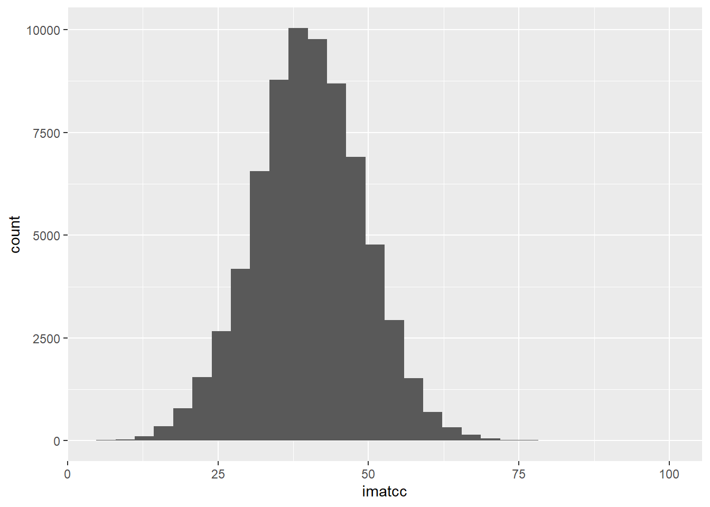
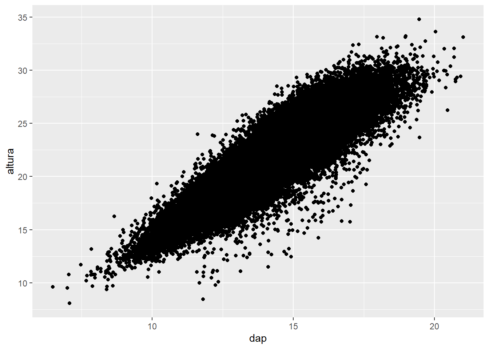
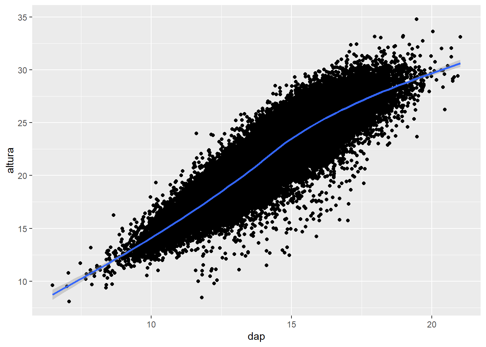
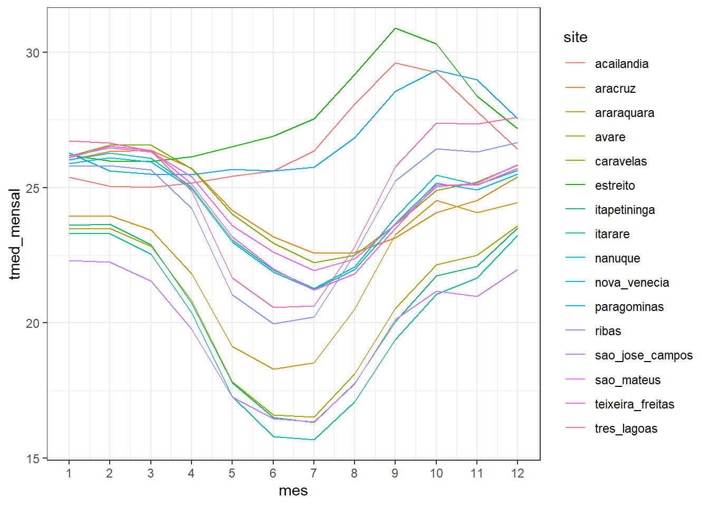
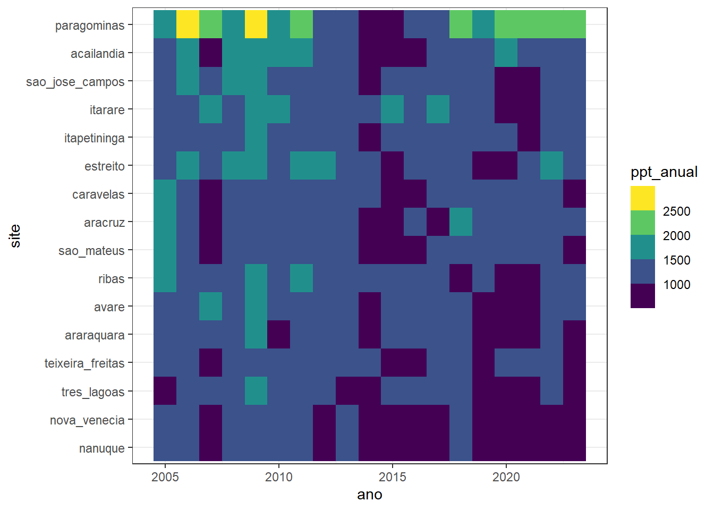
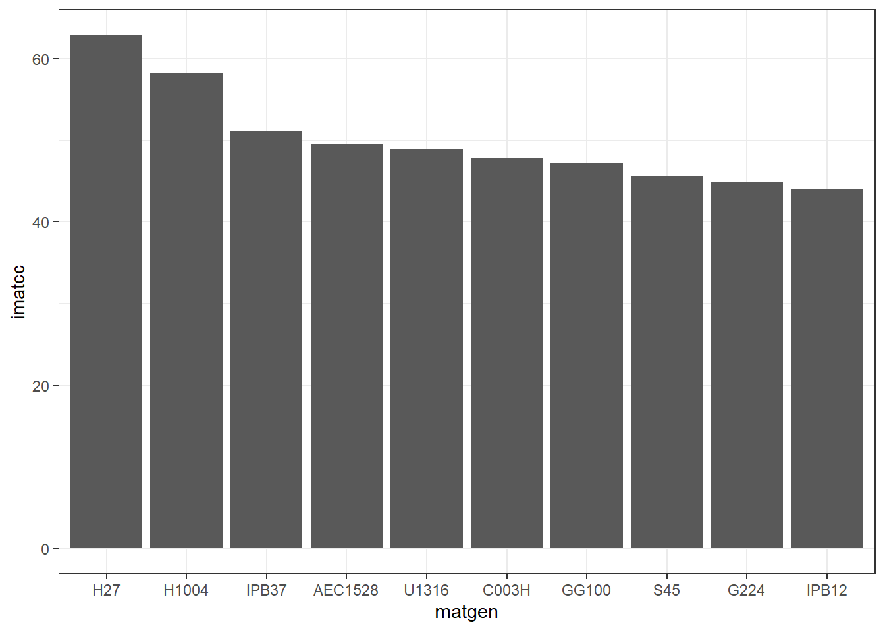
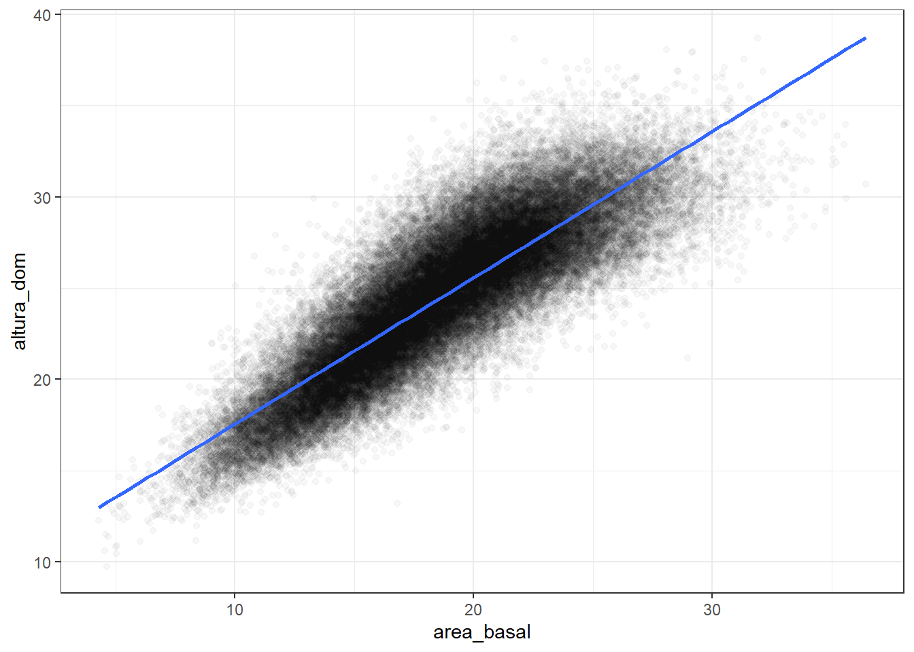

Manipulação de dados
Warm-Up
Conhecendo os dados
Vamos começar importando os dados do arquivo input/jpf_ifc_ms.xlsx. Para indicar que o arquivo está dentro de uma pasta, é preciso utilizar a barra /,
## ── Attaching core tidyverse packages ──
## ✔ dplyr 1.1.4 ✔ readr 2.1.4
## ✔ forcats 1.0.0 ✔ stringr 1.5.1
## ✔ ggplot2 3.4.4 ✔ tibble 3.2.1
## ✔ lubridate 1.9.3 ✔ tidyr 1.3.0
## ✔ purrr 1.0.2
## ── Conflicts ──────────────────────────
## ✖ dplyr::filter() masks stats::filter()
## ✖ dplyr::lag() masks stats::lag()
## ℹ Use the conflicted package (<http://conflicted.r-lib.org/>) to force all conflicts to become errors## # A tibble: 70,916 × 8
## matgen indice_sitio imatcc dap altura altura_dom area_basal ncovas_viva
## <chr> <dbl> <dbl> <dbl> <dbl> <dbl> <dbl> <dbl>
## 1 ARA6084 25.3 17.5 10.7 12.8 13.8 8.45 900
## 2 ARA6084 24.8 13.7 9.99 12.1 13.2 6.98 850
## 3 VT01 28.2 29.5 11.7 17.0 18.6 11.9 1100
## 4 VT01 27.8 29.7 11.3 16.4 18.0 12.3 1150
## 5 VT01 28.5 39.4 16.0 26.0 28.8 24.0 1175
## 6 VT01 31.6 44.2 17.2 28.5 31.8 24.4 1025
## 7 VT01 26.9 33.5 13.8 21.3 23.4 17.7 1150
## 8 VT01 29.3 39.8 17.3 27.0 29.6 23.4 975
## 9 IPB22 26.9 26.4 14.5 23.7 25.9 15.7 925
## 10 IPB22 28.7 29.8 12.9 22.6 25.6 14.8 1075
## # ℹ 70,906 more rowsPrimeiro vamos fazer um histograma para poder ver a distribuição da variável imatcc.
## `stat_bin()` using `bins = 30`. Pick
## better value with `binwidth`.
Agora, vamos ver a relação entre o dap e o altura dos filmes.

## `geom_smooth()` using method = 'gam'
## and formula = 'y ~ s(x, bs = "cs")'
Qual o lucro médio dos filmes?
Nosso objetivo agora é calcular o lucro médio dos filmes. Primeiro vamos criar uma coluna e calcular o lucro de cada filme.
tab_ifc_modificado <- mutate(tab_ifc, vol_individual = pi * dap^2 * 1/4000 * altura * 0.5)
tab_ifc_modificado## # A tibble: 70,916 × 9
## matgen indice_sitio imatcc dap altura altura_dom area_basal ncovas_viva
## <chr> <dbl> <dbl> <dbl> <dbl> <dbl> <dbl> <dbl>
## 1 ARA6084 25.3 17.5 10.7 12.8 13.8 8.45 900
## 2 ARA6084 24.8 13.7 9.99 12.1 13.2 6.98 850
## 3 VT01 28.2 29.5 11.7 17.0 18.6 11.9 1100
## 4 VT01 27.8 29.7 11.3 16.4 18.0 12.3 1150
## 5 VT01 28.5 39.4 16.0 26.0 28.8 24.0 1175
## 6 VT01 31.6 44.2 17.2 28.5 31.8 24.4 1025
## 7 VT01 26.9 33.5 13.8 21.3 23.4 17.7 1150
## 8 VT01 29.3 39.8 17.3 27.0 29.6 23.4 975
## 9 IPB22 26.9 26.4 14.5 23.7 25.9 15.7 925
## 10 IPB22 28.7 29.8 12.9 22.6 25.6 14.8 1075
## # ℹ 70,906 more rows
## # ℹ 1 more variable: vol_individual <dbl>Vamos isolar os valores de lucro e colocar em um objeto e em seguida calcular a média.
## [1] 1.874253Vamos refazer os 2 primeiros passos unindo os comandos em um só.
vec_vol_individual <- pull(mutate(tab_ifc, vol_individual = pi * dap^2 * 1/4000 * altura * 0.5))
mean(vec_vol_individual)## [1] 1.874253Seguindo a mesma ideia, podemos unificar todos os comandos em uma única chamada.
## [1] 1.874253Agora utilizando um operador especial chamado pipe, vamos executar as mesmas funções, porém de forma organizada e de fácil interpretação.
tab_ifc %>%
mutate(vol_individual = pi * dap^2 * 1/4000 * altura * 0.5) %>%
pull(vol_individual) %>%
mean()## [1] 1.874253Sobre o Tidyverse
Neste curso utilizaremos como referência os pacotes vinculados ao tidyverse, grupo de funções que utilizam a mesma filosofia de programação e foram desenvolvidos para atuarem em conjunto. O tidyverse é mantido por um time de desenvolvedores do RStudio e liderado pelo seu idealizador Hadley Wickham.
Há diversas funções disponíveis nos pacotes do tidyverse que tem um equivalente direto nos pacotes base do R, mas com uma implementação mais moderna e consistente que facilita a estruturação do código. No decorrer do curso vamos ter vários exemplos desse comparativo.
A manipulação de dados é, na maioria das vezes, realizado com data.frames e por isso iremos ver as principais funções que lidam com essa estrutura de forma rápida e prática.
O pacote dplyr é hoje um dos pacotes mais utilizados para esta finalidade. Ele disponibiliza diversas funções que são “equivalentes” às funções básicas do R, mas como melhorias que nos poupam tempo e deixam o código muito mais fácil de interpretar.
Como exemplo, vamos realizar uma análise exploratória dos dados de um inventário na floresta amazônica.
## # A tibble: 3,648 × 11
## chave site ano mes seq nd doy lon lat tmed ppt
## <chr> <chr> <dbl> <dbl> <dbl> <dbl> <dbl> <dbl> <dbl> <dbl> <dbl>
## 1 ribas 2005 ribas 2005 1 1 31 15 -53.8 -20.5 25.2 325.
## 2 ribas 2005 ribas 2005 2 2 28 46 -53.8 -20.5 25.6 83.3
## 3 ribas 2005 ribas 2005 3 3 31 74 -53.8 -20.5 25.7 117.
## 4 ribas 2005 ribas 2005 4 4 30 105 -53.8 -20.5 24.7 84.3
## 5 ribas 2005 ribas 2005 5 5 31 135 -53.8 -20.5 21.1 104.
## 6 ribas 2005 ribas 2005 6 6 30 166 -53.8 -20.5 20.1 114.
## 7 ribas 2005 ribas 2005 7 7 31 196 -53.8 -20.5 17.4 21.8
## 8 ribas 2005 ribas 2005 8 8 31 227 -53.8 -20.5 21.8 10.7
## 9 ribas 2005 ribas 2005 9 9 30 258 -53.8 -20.5 22.0 133.
## 10 ribas 2005 ribas 2005 10 10 31 288 -53.8 -20.5 25.4 166.
## # ℹ 3,638 more rowsFilter
Com a função filter() é possível selecionar linhas específicas, de acordo com o fator que se deseja. Podem ser usados um ou vários fatores de seleção.
## # A tibble: 8 × 11
## chave site ano mes seq nd doy lon lat tmed ppt
## <chr> <chr> <dbl> <dbl> <dbl> <dbl> <dbl> <dbl> <dbl> <dbl> <dbl>
## 1 ribas 2023 ribas 2023 12 228 31 349 -53.8 -20.5 32.0 30.4
## 2 tres_lagoas 2023 tres_… 2023 12 228 31 349 -51.7 -20.8 32.9 13.2
## 3 estreito 2005 estre… 2005 10 10 31 288 -47.5 -6.58 32.3 22.4
## 4 estreito 2015 estre… 2015 9 129 30 258 -47.5 -6.58 32.9 2.72
## 5 estreito 2015 estre… 2015 10 130 31 288 -47.5 -6.58 32.9 43.9
## 6 estreito 2017 estre… 2017 10 154 31 288 -47.5 -6.58 32.6 68.5
## 7 estreito 2019 estre… 2019 9 177 30 258 -47.5 -6.58 32.7 4.85
## 8 estreito 2020 estre… 2020 9 189 30 259 -47.5 -6.58 32.6 6.12## # A tibble: 3 × 11
## chave site ano mes seq nd doy lon lat tmed ppt
## <chr> <chr> <dbl> <dbl> <dbl> <dbl> <dbl> <dbl> <dbl> <dbl> <dbl>
## 1 estreito 2015 estreito 2015 9 129 30 258 -47.5 -6.58 32.9 2.72
## 2 estreito 2019 estreito 2019 9 177 30 258 -47.5 -6.58 32.7 4.85
## 3 estreito 2020 estreito 2020 9 189 30 259 -47.5 -6.58 32.6 6.12## # A tibble: 28 × 11
## chave site ano mes seq nd doy lon lat tmed ppt
## <chr> <chr> <dbl> <dbl> <dbl> <dbl> <dbl> <dbl> <dbl> <dbl> <dbl>
## 1 ribas 2023 ribas 2023 12 228 31 349 -53.8 -20.5 32.0 30.4
## 2 tres_lagoas 20… tres… 2007 1 25 31 15 -51.7 -20.8 25.9 412.
## 3 tres_lagoas 20… tres… 2023 12 228 31 349 -51.7 -20.8 32.9 13.2
## 4 acailandia 2008 acai… 2008 3 39 31 75 -47.5 -4.98 24.3 444.
## 5 acailandia 2023 acai… 2023 11 227 30 319 -47.5 -4.98 27.7 536.
## 6 estreito 2005 estr… 2005 10 10 31 288 -47.5 -6.58 32.3 22.4
## 7 estreito 2015 estr… 2015 9 129 30 258 -47.5 -6.58 32.9 2.72
## 8 estreito 2015 estr… 2015 10 130 31 288 -47.5 -6.58 32.9 43.9
## 9 estreito 2017 estr… 2017 10 154 31 288 -47.5 -6.58 32.6 68.5
## 10 estreito 2019 estr… 2019 9 177 30 258 -47.5 -6.58 32.7 4.85
## # ℹ 18 more rows## # A tibble: 228 × 11
## chave site ano mes seq nd doy lon lat tmed ppt
## <chr> <chr> <dbl> <dbl> <dbl> <dbl> <dbl> <dbl> <dbl> <dbl> <dbl>
## 1 ribas 2005 ribas 2005 1 1 31 15 -53.8 -20.5 25.2 325.
## 2 ribas 2005 ribas 2005 2 2 28 46 -53.8 -20.5 25.6 83.3
## 3 ribas 2005 ribas 2005 3 3 31 74 -53.8 -20.5 25.7 117.
## 4 ribas 2005 ribas 2005 4 4 30 105 -53.8 -20.5 24.7 84.3
## 5 ribas 2005 ribas 2005 5 5 31 135 -53.8 -20.5 21.1 104.
## 6 ribas 2005 ribas 2005 6 6 30 166 -53.8 -20.5 20.1 114.
## 7 ribas 2005 ribas 2005 7 7 31 196 -53.8 -20.5 17.4 21.8
## 8 ribas 2005 ribas 2005 8 8 31 227 -53.8 -20.5 21.8 10.7
## 9 ribas 2005 ribas 2005 9 9 30 258 -53.8 -20.5 22.0 133.
## 10 ribas 2005 ribas 2005 10 10 31 288 -53.8 -20.5 25.4 166.
## # ℹ 218 more rows## # A tibble: 456 × 11
## chave site ano mes seq nd doy lon lat tmed ppt
## <chr> <chr> <dbl> <dbl> <dbl> <dbl> <dbl> <dbl> <dbl> <dbl> <dbl>
## 1 ribas 2005 ribas 2005 1 1 31 15 -53.8 -20.5 25.2 325.
## 2 ribas 2005 ribas 2005 2 2 28 46 -53.8 -20.5 25.6 83.3
## 3 ribas 2005 ribas 2005 3 3 31 74 -53.8 -20.5 25.7 117.
## 4 ribas 2005 ribas 2005 4 4 30 105 -53.8 -20.5 24.7 84.3
## 5 ribas 2005 ribas 2005 5 5 31 135 -53.8 -20.5 21.1 104.
## 6 ribas 2005 ribas 2005 6 6 30 166 -53.8 -20.5 20.1 114.
## 7 ribas 2005 ribas 2005 7 7 31 196 -53.8 -20.5 17.4 21.8
## 8 ribas 2005 ribas 2005 8 8 31 227 -53.8 -20.5 21.8 10.7
## 9 ribas 2005 ribas 2005 9 9 30 258 -53.8 -20.5 22.0 133.
## 10 ribas 2005 ribas 2005 10 10 31 288 -53.8 -20.5 25.4 166.
## # ℹ 446 more rowsArrange
Para ordenar as colunas, podemos usar a função arrange(). A hierarquia é dada pela sequência dos fatores que são adicionados como argumentos da função.
## # A tibble: 3,648 × 11
## chave site ano mes seq nd doy lon lat tmed ppt
## <chr> <chr> <dbl> <dbl> <dbl> <dbl> <dbl> <dbl> <dbl> <dbl> <dbl>
## 1 itarare 2016 itar… 2016 6 138 30 167 -49.3 -24.1 13.4 97.2
## 2 itarare 2009 itar… 2009 6 54 30 166 -49.3 -24.1 13.7 84.6
## 3 itarare 2011 itar… 2011 6 78 30 166 -49.3 -24.1 13.7 93.1
## 4 itarare 2021 itar… 2021 7 199 31 196 -49.3 -24.1 13.8 37.8
## 5 itarare 2007 itar… 2007 7 31 31 196 -49.3 -24.1 13.9 194.
## 6 sao_jose_campos … sao_… 2009 6 54 30 166 -45.9 -23.2 14.1 47.7
## 7 itapetininga 2009 itap… 2009 6 54 30 166 -48.0 -23.6 14.2 70.8
## 8 avare 2009 avare 2009 6 54 30 166 -48.9 -23.1 14.3 71.7
## 9 itapetininga 2016 itap… 2016 6 138 30 167 -48.0 -23.6 14.3 120.
## 10 avare 2011 avare 2011 6 78 30 166 -48.9 -23.1 14.4 36
## # ℹ 3,638 more rows## # A tibble: 3,648 × 11
## chave site ano mes seq nd doy lon lat tmed ppt
## <chr> <chr> <dbl> <dbl> <dbl> <dbl> <dbl> <dbl> <dbl> <dbl> <dbl>
## 1 estreito 2015 estr… 2015 9 129 30 258 -47.5 -6.58 32.9 2.72
## 2 tres_lagoas 2023 tres… 2023 12 228 31 349 -51.7 -20.8 32.9 13.2
## 3 estreito 2015 estr… 2015 10 130 31 288 -47.5 -6.58 32.9 43.9
## 4 estreito 2019 estr… 2019 9 177 30 258 -47.5 -6.58 32.7 4.85
## 5 estreito 2020 estr… 2020 9 189 30 259 -47.5 -6.58 32.6 6.12
## 6 estreito 2017 estr… 2017 10 154 31 288 -47.5 -6.58 32.6 68.5
## 7 estreito 2005 estr… 2005 10 10 31 288 -47.5 -6.58 32.3 22.4
## 8 ribas 2023 ribas 2023 12 228 31 349 -53.8 -20.5 32.0 30.4
## 9 acailandia 2015 acai… 2015 10 130 31 288 -47.5 -4.98 31.9 28.7
## 10 paragominas 2015 para… 2015 10 130 31 288 -47.4 -3.03 31.9 17.7
## # ℹ 3,638 more rowsSelect
A função select() auxilia-nos na seleção de variáveis (colunas).
## # A tibble: 3,648 × 4
## site ano mes ppt
## <chr> <dbl> <dbl> <dbl>
## 1 ribas 2005 1 325.
## 2 ribas 2005 2 83.3
## 3 ribas 2005 3 117.
## 4 ribas 2005 4 84.3
## 5 ribas 2005 5 104.
## 6 ribas 2005 6 114.
## 7 ribas 2005 7 21.8
## 8 ribas 2005 8 10.7
## 9 ribas 2005 9 133.
## 10 ribas 2005 10 166.
## # ℹ 3,638 more rows## # A tibble: 3,648 × 6
## site ano mes seq nd doy
## <chr> <dbl> <dbl> <dbl> <dbl> <dbl>
## 1 ribas 2005 1 1 31 15
## 2 ribas 2005 2 2 28 46
## 3 ribas 2005 3 3 31 74
## 4 ribas 2005 4 4 30 105
## 5 ribas 2005 5 5 31 135
## 6 ribas 2005 6 6 30 166
## 7 ribas 2005 7 7 31 196
## 8 ribas 2005 8 8 31 227
## 9 ribas 2005 9 9 30 258
## 10 ribas 2005 10 10 31 288
## # ℹ 3,638 more rows## # A tibble: 3,648 × 6
## chave site ano mes tmed ppt
## <chr> <chr> <dbl> <dbl> <dbl> <dbl>
## 1 ribas 2005 ribas 2005 1 25.2 325.
## 2 ribas 2005 ribas 2005 2 25.6 83.3
## 3 ribas 2005 ribas 2005 3 25.7 117.
## 4 ribas 2005 ribas 2005 4 24.7 84.3
## 5 ribas 2005 ribas 2005 5 21.1 104.
## 6 ribas 2005 ribas 2005 6 20.1 114.
## 7 ribas 2005 ribas 2005 7 17.4 21.8
## 8 ribas 2005 ribas 2005 8 21.8 10.7
## 9 ribas 2005 ribas 2005 9 22.0 133.
## 10 ribas 2005 ribas 2005 10 25.4 166.
## # ℹ 3,638 more rowsMutate
Para criar novas variáveis, podemos usar a função mutate(). Um diferencial dessa função em relação à função base do R, é que podemos utilizar variáveis criadas dentro do próprio comando.
## # A tibble: 3,648 × 12
## chave site ano mes seq nd doy lon lat tmed ppt temp_otima
## <chr> <chr> <dbl> <dbl> <dbl> <dbl> <dbl> <dbl> <dbl> <dbl> <dbl> <lgl>
## 1 ribas… ribas 2005 1 1 31 15 -53.8 -20.5 25.2 325. FALSE
## 2 ribas… ribas 2005 2 2 28 46 -53.8 -20.5 25.6 83.3 FALSE
## 3 ribas… ribas 2005 3 3 31 74 -53.8 -20.5 25.7 117. FALSE
## 4 ribas… ribas 2005 4 4 30 105 -53.8 -20.5 24.7 84.3 FALSE
## 5 ribas… ribas 2005 5 5 31 135 -53.8 -20.5 21.1 104. TRUE
## 6 ribas… ribas 2005 6 6 30 166 -53.8 -20.5 20.1 114. TRUE
## 7 ribas… ribas 2005 7 7 31 196 -53.8 -20.5 17.4 21.8 FALSE
## 8 ribas… ribas 2005 8 8 31 227 -53.8 -20.5 21.8 10.7 TRUE
## 9 ribas… ribas 2005 9 9 30 258 -53.8 -20.5 22.0 133. TRUE
## 10 ribas… ribas 2005 10 10 31 288 -53.8 -20.5 25.4 166. FALSE
## # ℹ 3,638 more rowsNote que se quisermos utilizar os dados calculados no futuro, temos de salvar em um objeto. No caso, vamos salvar no mesmo objeto tab_clima2 de forma que ele será atualizado com as novas colunas.
Summarise
A função summarise nos permite resumir dados. Também é possível resumir dados em função de vários fatores com o group_by.
## # A tibble: 1 × 1
## tmed_media
## <dbl>
## 1 23.7## # A tibble: 1 × 1
## ppt_media
## <dbl>
## 1 102.tab_clima_agrupado_ano <- group_by(tab_clima, ano)
summarise(tab_clima_agrupado_ano, tmed_media = mean(tmed))## # A tibble: 19 × 2
## ano tmed_media
## <dbl> <dbl>
## 1 2005 23.6
## 2 2006 23.0
## 3 2007 23.5
## 4 2008 23.2
## 5 2009 23.4
## 6 2010 23.4
## 7 2011 22.9
## 8 2012 23.6
## 9 2013 23.5
## 10 2014 24.0
## 11 2015 24.7
## 12 2016 24.0
## 13 2017 23.6
## 14 2018 23.7
## 15 2019 24.5
## 16 2020 24.2
## 17 2021 24.1
## 18 2022 23.5
## 19 2023 24.4tab_clima_agrupado_site_ano <- group_by(tab_clima, site, ano)
tab_clima_site_ano <- summarise(
tab_clima_agrupado_site_ano,
tmed_anual = mean(tmed),
ppt_anual = sum(ppt)
)## `summarise()` has grouped output by
## 'site'. You can override using the
## `.groups` argument.## # A tibble: 304 × 4
## # Groups: site [16]
## site ano tmed_anual ppt_anual
## <chr> <dbl> <dbl> <dbl>
## 1 acailandia 2005 27.3 1136.
## 2 acailandia 2006 25.2 1930.
## 3 acailandia 2007 27.1 937.
## 4 acailandia 2008 25.6 1842.
## 5 acailandia 2009 25.4 1782.
## 6 acailandia 2010 26.5 1557.
## 7 acailandia 2011 25.4 1655.
## 8 acailandia 2012 26.5 1259.
## 9 acailandia 2013 26.2 1417.
## 10 acailandia 2014 27.0 993.
## # ℹ 294 more rows## # A tibble: 11 × 4
## # Groups: site [9]
## site ano tmed_anual ppt_anual
## <chr> <dbl> <dbl> <dbl>
## 1 acailandia 2015 28.4 691.
## 2 araraquara 2021 23.1 690.
## 3 caravelas 2015 25.6 667.
## 4 nanuque 2015 25.6 601.
## 5 nanuque 2023 25.4 699.
## 6 nova_venecia 2015 25.4 566.
## 7 paragominas 2015 28.8 689.
## 8 sao_mateus 2015 25.6 683.
## 9 teixeira_freitas 2015 25.5 654.
## 10 tres_lagoas 2020 26.2 641.
## 11 tres_lagoas 2021 26.2 570.Operador %>%
O pacote dplyr foi desenhado para trabalhar em conjunto que o operador em cadeia %>%. O que esse operador faz é aplicar o que está no LHS no primeiro parâmetro da função do RHS. Podemos também direcionar o local onde o conteúdo do LHS será aplicado informando um . como argumento.
tab_clima %>%
group_by(site, ano) %>%
summarise(
tmed_anual = mean(tmed),
ppt_anual = sum(ppt)
) %>%
filter(ppt_anual < 700)## `summarise()` has grouped output by
## 'site'. You can override using the
## `.groups` argument.## # A tibble: 11 × 4
## # Groups: site [9]
## site ano tmed_anual ppt_anual
## <chr> <dbl> <dbl> <dbl>
## 1 acailandia 2015 28.4 691.
## 2 araraquara 2021 23.1 690.
## 3 caravelas 2015 25.6 667.
## 4 nanuque 2015 25.6 601.
## 5 nanuque 2023 25.4 699.
## 6 nova_venecia 2015 25.4 566.
## 7 paragominas 2015 28.8 689.
## 8 sao_mateus 2015 25.6 683.
## 9 teixeira_freitas 2015 25.5 654.
## 10 tres_lagoas 2020 26.2 641.
## 11 tres_lagoas 2021 26.2 570.tab_clima %>%
filter(site == "ribas", mes == 1) %>%
select(site, ano, mes, tmed) %>%
arrange(desc(tmed)) %>%
slice(1:5)## # A tibble: 5 × 4
## site ano mes tmed
## <chr> <dbl> <dbl> <dbl>
## 1 ribas 2013 1 27.7
## 2 ribas 2019 1 27.0
## 3 ribas 2020 1 26.8
## 4 ribas 2021 1 26.5
## 5 ribas 2015 1 26.2Gráficos rápidos
tab_clima %>%
group_by(site, mes) %>%
summarise(
tmed_mensal = mean(tmed)
) %>%
ggplot(aes(mes,tmed_mensal, color = site)) +
geom_line() +
scale_x_continuous(breaks = 1:12) +
theme_bw()## `summarise()` has grouped output by
## 'site'. You can override using the
## `.groups` argument.
tab_clima %>%
group_by(site, ano) %>%
summarise(ppt_anual = sum(ppt)) %>%
ungroup() %>%
mutate(site = fct_reorder(site, ppt_anual)) %>%
ggplot(aes(ano, site, fill = ppt_anual)) +
geom_tile() +
scale_fill_viridis_b() +
theme_bw()## `summarise()` has grouped output by
## 'site'. You can override using the
## `.groups` argument.
tab_ifc %>%
group_by(matgen) %>%
summarise(imatcc = mean(imatcc)) %>%
top_n(10, imatcc) %>%
mutate(matgen = fct_reorder(matgen, -imatcc)) %>%
ggplot(aes(matgen, imatcc)) +
geom_col() +
theme_bw()
tab_ifc %>%
ggplot(aes(area_basal, altura_dom)) +
geom_point(alpha = 0.03) +
geom_smooth(method = "lm") +
theme_bw()## `geom_smooth()` using formula = 'y ~
## x'